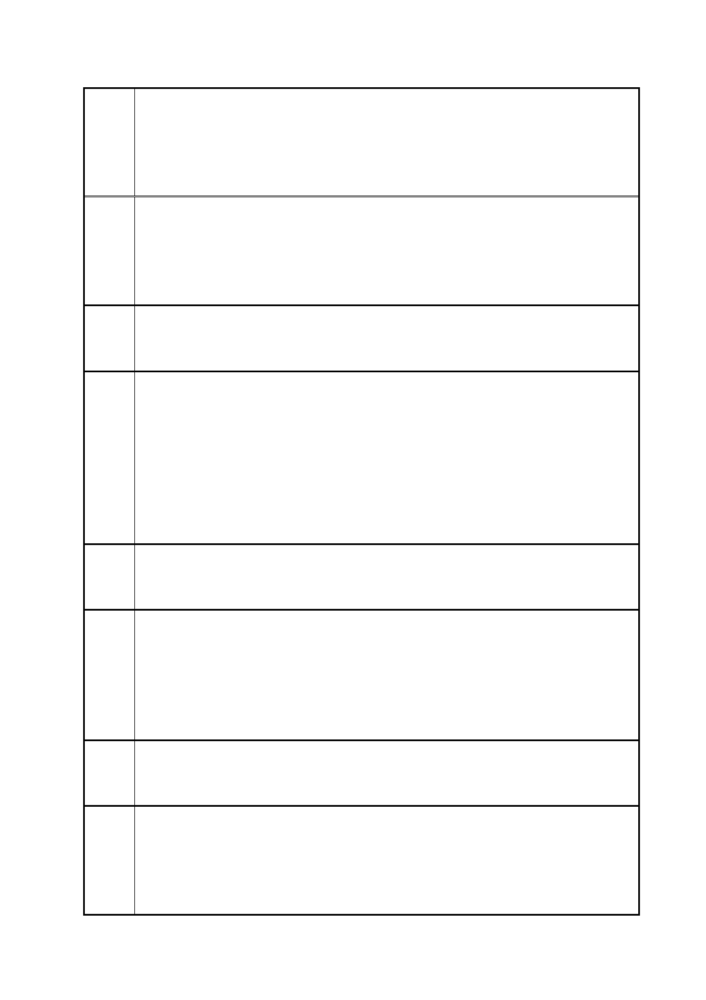

臺北市都市計畫委員會 公民或團體陳情意見綜理表
「變更臺北市信義區逸仙段二小段 33 地號等 21 筆土地（原臺北機廠）
案
名
工業區為創意文化專用區、特定專用區、道路及綠地用地主要計畫案」
及「擬定臺北市信義區逸仙段二小段 33 地號等 21 筆土地（原臺北機
廠）創意文化專用區、特定專用區、道路及綠地用地細部計畫暨劃定
都市更新地區計畫案」
實施環境影響評估細目及範圍認定標準」第四條第一項第十一款與第
三十一條第一項第一款「位於都市土地，申請開發或累積開發面積五
公頃以上」應辦理環評之條件，然經查本變更計畫案未依法併行辦理
環境影響評估，已違反「都市計劃工業區檢討變更審議規範」。
建議
辦法
二
陳情
理由
三
建議
辦法
三
陳情
理由
四
建議
辦法
四
陳情
理由
五
在開發單位依法提出環境影響說明書送審之前，立即停止本變更計畫
主要計畫案與細部計畫案之審查，
依據都市計畫法第三十八條「特定專用區內土地及建築物，不得違反
其特定用途之使用。」依據台北市土地使用分區管制自治條例第四條
第一項第二十二款「特定專用區：為特定目的而劃定之分區」。經查
台北市都市計劃土地使用分區面積統計資料，特定專用區均敘明如工
商綜合專用區，產業專用區、科技專用區、事業專用區、文化體育專
用區等。然本變更計畫案之主要計畫案與細部計畫案，均未敘明其特
定專用區之特定目的，違反都市計畫法與台北市土地使用分區管制自
治條例。
立即退回本變更計畫案主要計畫案與細部計畫並停止審查程序。
依據內政部營建署「都市計畫細部計畫審議規範」第十一條第一項第
四款「主要計畫變更土地使用分區規模達一公頃以上地區，應劃設不
低於該等地區總面積百分之十之公園、綠地、廣場、體育場所、兒童
遊樂場用地。」本變更案基地面積 17.035 公頃，依法應留設至少百
分之十之公園綠地，然經查本案細部計畫綠地僅佔總面積之百分之零
點六二，已違反「都市計畫細部計畫審議規範」。
立即退回本變更計畫案主要計畫案與細部計畫並停止審查程序。
依據都市計畫法第六十五條「更新計畫應以圖說表明左列事項：一、
劃定地區內重建、整建及維護地段之詳細設計圖說。二、土地使用計
畫。三、區內公共設施興修或改善之設計圖說。 四、事業計畫。五、
財務計晝。六、實施進度。」第六十六條「更新地區範圍之劃定及更
新計畫之擬定、變更、報核與發布，應分別依照有關細部計畫之規定
第 43 頁/共 154 頁